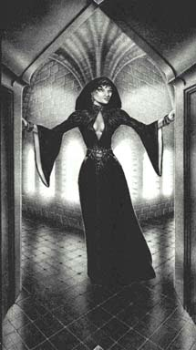

Дейдра(Судя по всему мертвa, сброшена в пропасть Брэндом). длинные черные волосы и синие глаза. Прекрасная, как ее имя, Дейрдра была, наверное, величайшей потерей семьи за время войны с Брандом. Желание стабилизировать изменчивую ситуацию хранило ее, постоянно увлеченную наиболее жарким из ближних боев, от участия в битвах любого из братьев. Ее смерть случилась как следствие ее постоянной готовности помочь. Для народа Амбера она была почти что богиней, сильной и доброй, любимой без слов. |
 |